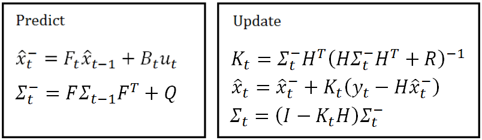

本文主要关注卡尔曼滤波的流程和 5 个公式。
卡尔曼滤波的主要思想：首先，根据时间步 t-1 的状态空间，通过状态转移矩阵和控制矩阵(控制量)，预测 t 时间步时的状态空间。由于 t-1 时间步的状态空间本身就不是准确的，含有噪声，且状态转移的过程也引入噪声，因此预测得到的 t 时间步的状态空间是不准确的。这时，我们在 t 时间步进行实际的测量，使用得到的测量结果去修正预测得到的状态空间。其实就是对预测的结果和测量的结果根据其不准确度(用协方差矩阵表示)来计算权重(即卡尔曼增益)，对两个结果进行加权平均，并依此得到 t 时间步最优的结果。
卡尔曼滤波的五个公式

卡尔曼滤波模型